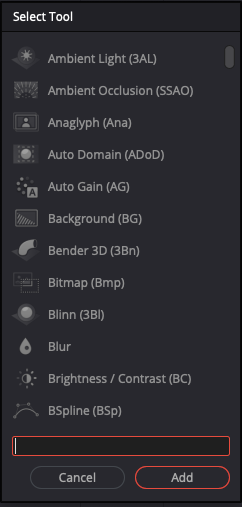
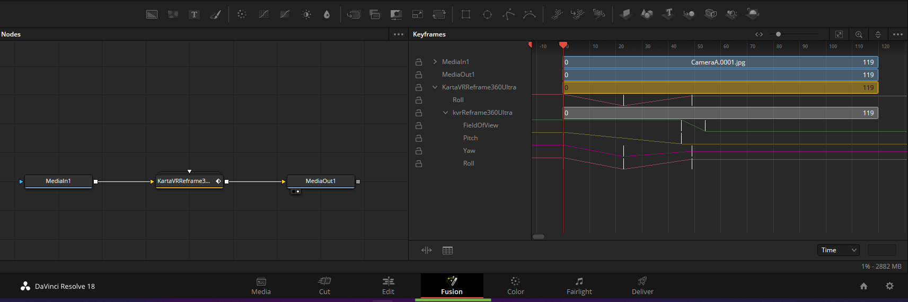
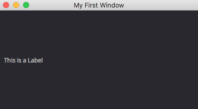
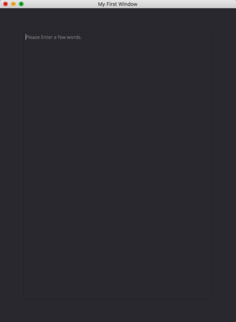

Installing the BMD Resolve / Fusion Software
Scrivener Export - Reformatting Needed!
This article is an export of a Scrivener document. It will definitely need at least some reformatting to work in Obsidian and MkDocs. Delete this note once the article's formatting has been fixed to some extent.
Blackmagic Design's Resolve software is a powerful editing and color correction environment. Resolve is a mainstay at many high-end post-production facilities in the film & TV sector.
Blackmagic Design's Fusion Studio software is a node-based compositing environment that allows for the creation of high-quality visual effects shots. Fusion provides artists with a very capable 2.5D compositing environment, and supports the design of complex animated 2D/3D motion graphics with a high level of node-based proceduralism. Fusion also enables 360VR content creation, and more.
Download Resolve/Fusion Studio from BMD's Website¶
Download Resolve/Fusion Studio from BMD's Website
If you want to install the absolutely latest release of Resolve or Fusion you should go directly to the BMD Support Center Website to access the installers:
https://www.blackmagicdesign.com/support/family/davinci-resolve-and-fusion
Alternatively, the Steak Underwater Fusion community forum has a concise list of all BMD Resolveand Fusion releases with download links.
Resolve (Free)¶
Resolve (Free)
If you are looking for "Resolve (free)" it is listed in the BMD support center as simply "Resolve". Resolve (Free)'s software license terms allow for both personal and commercial use of the software at no cost.
Resolve (free) 18.1 Linux Download
https://www.blackmagicdesign.com/ca/support/download/ce671c375b4d48e2bf9dc5fb422aa9c9/Linux
Resolve (free) 18.1 Windows Download
https://www.blackmagicdesign.com/ca/support/download/ce671c375b4d48e2bf9dc5fb422aa9c9/Windows
Resolve (free) 18.1 macOS Download
https://www.blackmagicdesign.com/ca/support/download/ce671c375b4d48e2bf9dc5fb422aa9c9/Mac%20OS%20X
About Resolve and the Fusion Page¶
About Resolve and the Fusion Page
Blackmagic Design provides access to a version of the Fusion compositing environment as a custom page in the Resolve software called the "Fusion" page.
The Fusion page environment allows video editors to create their own title templates in Fusion and use them on the Edit page. The Fusion page node-based environment makes it a quick job to perform basic visual effects compositing tasks inside a larger Resolve project.
The Fusion page availability in Resolve (Free) led to the retirement of the earlier Fusion (Free) Standalone product at Fusion v9. If you want access to a standalone version of Fusion that is only found in the Fusion Studio product.
The Fusion page adds a new analogy of a "MediaIn" and "MediaOut" node which interfaces with the Media Pool/Edit/Delivery pages, in addition to the traditional "Loader" and "Saver" nodes used in Fusion for working with image sequences like OpenEXR format media.
The primary limitation of the free version of Resolve is that it can export footage at up to 3840x2160px resolution. This resolution limit is enforced as a maximum of 3840 px on the horizontal axis, and a maximum of 2160px on the vertical axis. A variety of advanced features like optical flow support, HMD previewing, and several other Fusion nodes are held back until you upgrade to Resolve Studio or Fusion Studio.
All in all, most people can get quite far in their everyday workflows in Resolve (Free).
If you are a freelancer doing multi-pass compositing with 4K UHD resolution EXR footage you can be very productive using merely the Resolve (Free) Fusion page environment. This is an optimal configuration to use while you are quickly mastering new skills and learning what is possible with the toolset.
Resolve Studio (Paid)¶
Resolve Studio (Paid)
The paid version of Resolve is known as "Resolve Studio".
There is a separate installer for Resolve Studio that is available on the BMD Support Center website. This is a separate download from the previous free version of Resolve that you might already have installed while you were evaluating the software. The two Resolve installers place the files at the same location on your hard disk so only one of them can exist at a time.
The paid version, Resolve Studio, is activated using either: a Resolve Studio "activation card" license, or a hardware-based USB licensing dongle that holds a Resolve Studio or a Fusion Studio v7-18+ license.
Resolve Studio 18.1 Linux Download
https://www.blackmagicdesign.com/ca/support/download/2ff9be8a1a9c4082b1fe977133816b6a/Linux
Resolve Studio 18.1 Windows Download
https://www.blackmagicdesign.com/ca/support/download/2ff9be8a1a9c4082b1fe977133816b6a/Windows
Resolve Studio 18.1 macOS Download
https://www.blackmagicdesign.com/ca/support/download/2ff9be8a1a9c4082b1fe977133816b6a/Mac%20OS%20X
Resolve Studio Improvements over the Resolve (Free) Fusion page¶
Resolve Studio Improvements over the Resolve (Free) Fusion page
Resolve Studio unlocks access to higher-resolution rendering support, provides improved GPU-based hardware acceleration options, unlocks FusionSDK compiled plugin support for running tools like Krokodove, and gives access to external command-line automation via FuScript/Lua/Python. The paid version also adds machine learning features, optical flow, z-depth/disparity generator tools, 360VR headset preview support in the Fusion page, stereo 3D tools, and more.
Fusion Studio Standalone (Paid)¶
Fusion Studio Standalone (Paid)
"Fusion Studio" is the term for the dedicated standalone version of the Fusion compositing environment. Fusion Studio v18 can be activated with a Fusion Studio v7-18+ hardware-based USB dongle license, a Resolve Studio dongle license, or with a Resolve Studio "activation card" license.
Fusion Studio 18.1 Linux Download
https://www.blackmagicdesign.com/ca/support/download/5b520062049c4182bd3ee66ffad6df4d/Linux
Fusion Studio 18.1 Windows Download
https://www.blackmagicdesign.com/ca/support/download/5b520062049c4182bd3ee66ffad6df4d/Windows
Fusion Studio 18.1 macOS Download
https://www.blackmagicdesign.com/ca/support/download/5b520062049c4182bd3ee66ffad6df4d/Mac%20OS%20X
Fusion Studio Improvements over the Resolve (Free) Fusion page¶
Fusion Studio Improvements over the Resolve (Free) Fusion page
Fusion Studio provides a dedicated, full-screen, standalone environment for compositing without the overhead of having all of Resolve loaded into memory at the same time.
Fusion Studio also saves your project files into .comp format documents. The .comp file format holds plain text encoded Lua table data which is easier to manage and backup inside of a larger visual effects production pipeline.
The paid Fusion Studio product unlocks access to higher-resolution rendering support, provides improved GPU-based hardware acceleration options, unlocks FusionSDK compiled plugin support for running tools like Krokodove, and gives access to external command-line automation via FuScript/Lua/Python. The paid version also adds machine learning features, optical flow, z-depth/disparity generator tools, 360VR headset preview support in the Fusion page, stereo 3D tools, and more.
If you have Fusion Studio installed on your system you also have the ability to access and use the Fusion Render Node program which allows for a near unlimited number of render nodes to be run on the same LAN based subnet with no additional license costs from BMD. This feature can massively speed up your rendering productivity on projects that require faster turn around.
Fusion Studio Standalone has a built-in Render Manager feature that works well for freelance, and solo-artists who work primarily from a single workstation based GUI session in a home-office or small office environment. The Fusion Studio bundled Render Manager is accessed using the "File > Render Manager" menu item or the "Control + M" hotkey.
Fusion Render Node¶
Fusion Render Node
The Fusion Render Node program is available if you have a Fusion Studio license active on your LAN based subnet. Fusion Render Node is provided as a separate installer bundled alongside the Fusion Studio download from the BMD Support Center website.
When getting started, the Fusion Render Node program is typically controlled from inside a Fusion Studio based artist session using the "Fusion Render Manager".
The Fusion render node program can also be launched directly from the command-prompt with CLI arguments, or you can control the render node software from an external render manager program of your choice.
Command Line Usage¶
Command Line Usage
If you launch Fusion Render Node from a Terminal/Command-Prompt window with the "-h" help flag added to the end of the line, you will see a list of the full commands that are available for your use:
"/Applications/Blackmagic Fusion 18 Render Node/Fusion Render Node.app/Contents/MacOS/Fusion Render Node" -h
Fusion Render Node [<filename.comp> | <filename.dfq>] [/quiet] [/render [/frames <frameset>] [/start <frame>] [/end <frame>] [/step <step>] [/quit]] [/listen] [/join <host>] [/log <filename>] [/cleanlog] [/verbose] [/quietlicense] [/version] [/pri high|above|normal|below|idle] [/args [...]] [/execute <script string>]
When you render a Fusion .comp file via the command prompt, the program control can be managed 100% manually under human control using the following style of shell syntax:
"/Applications/Blackmagic Fusion 18 Render Node/Fusion Render Node.app/Contents/MacOS/Fusion Render Node" "/Users/vfx/Documents/MyProject/MyProject.comp" -render -verbose -quit
If you need a quick way to grab the filepath for your .comp document in the Finder (macOS) environment, you can right-click on the file with the ALT/Option key held down on the keyboard. A contextual menu item appears with a "Copy as Pathname" menu item. This will place the full absolute file path to the document in your macOS copy/paste clipboard.
On Windows 10/11 you have a similar feature that lets you right-click on a file, with the shift-key held down. A contextual menu item appears with a "Copy as Path" menu item.
External Render Manager Usage¶
External Render Manager Usage
If you have a team of artists who rely on Fusion Render Node, as part of a larger post-production workflow, you will likely experience productivity benefits from adopting a 3rd party render manager like the Amazon AWS Thinkbox Deadline or Pixar Tractor software.
Having an external render management tool, that was made by a 3rd party company, allows you to combine Fusion based comp rendering jobs alongside your existing 3D rendering workloads coming from a 3D department.
Using a render manager like Deadline makes it easy to control the order of operations for a group of tasks, called a "job batch", when they are computed on a render farm. This is often called a linked "dependent task".
Having a dependent job submitted to Deadline, in a single step, reduces the amount of manual "render wrangling" a human operator has to do when supervising complex jobs running on a large farm.
The "Submit Fusion Job to Deadline" scripted tool is used to define the Fusion .comp file you would like to render, the frame range to render, how many frames should be rendered per-job task, the version of Fusion Render Node to use, and many other options.
Automated Fusion Studio Installs¶
Automated Fusion Studio Installs
Here is a guide that covers automated installation of Fusion Studio and Fusion Render Node from the command-line:
https://www.steakunderwater.com/wesuckless/viewtopic.php?p=12528#p12528
Fusion Studio Standalone on Linux Preferences¶
Fusion Studio Standalone on Linux Preferences
- Fusion Studio > Preferences > User Interface
- Use gray background interface
- Auto control close tools
- Fusion Studio > Preferences > PathMap
- Enable reverse mapping of non-user paths
- Fusion Studio > Preferences > Memory > Interactive Render
- Simultaneous Branching
- Fusion Studio > Preferences > Memory > Final Render:
- Render 10 frames at once
- Simultaneous Branching
- Fusion Studio > Preferences > Frame Format > Color depth
- 32 bits float per channel (128 bit)
- Fusion Studio > Preferences > Flow > [ ] Auto remove routers
- Fusion Studio > Preferences > Tweaks > OpenGL > [x] Use float16 textures
- Fusion Studio > Preferences > Script > Options > Script editor:
- /usr/bin/gedit
- Fusion Studio > Preferences > Script > Python Version:
- Python 2.7
- Python 3.10
Install Resolve Studio on Linux¶
Install Resolve Studio on Linux
Resolve Install Folder Path:
/opt/resolve/
Resolve Studio on Linux Preferences¶
Resolve Studio on Linux Preferences
- User > UI Settings
- Reload last working project when logging in
- Use gray background for user interface
- Use gray background in viewers
- User > Project Save and Load
- Live Save
- Project Backups
- System > General > General Preferences
- External scripting using: Network
- System > Media Storage
- Direct I/O
- Mount: /home/vfx/Documents/BlackmagicDesign/DaVinci Resolve/ResolveCache
- Fusion Settings > Script > Options > Script editor:
- /usr/bin/gedit
- Fusion Settings > Script > Python Version:
- Python 2.7
- Python 3.10
- Fusion > Fusion Settings > General > [x] Summarize Load Errors
Getting Started With Nodes in Fusion¶
Getting Started With Nodes in Fusion
If you are getting started with Fusion it can be a bit scary using nodes for the first time.
Loading Imagery¶
Loading Imagery
Imagery is imported into Fusion using Loader or MediaIn nodes.
Imagery is exported from Fusion using Saver or MediaOut nodes.
If your Fusion timeline is set to have a single frame range (the start frame and end frame values are the same) you will be rendering a still image with your Saver node. If your Fusion timeline has a start frame and end frame range with different values, you will be exporting an image sequence.
When you are rendering imagery with a Saver node, frame padding is defined in an image sequence filename by writing in a frame number like 0000 to to match the number of zero padded digits you want in the final image:
C:\media\image_sequence.0000.exr
You can render an image to your operating system's temp folder using a Fusion feature called a "path map" which is a relative path that is used in place of the drive name:
Temp:\image_sequence.0000.exr
There is a path map option "Comp:\" that can be used to load imagery relative to the location of the current Fusion .comp compositing file. This makes it easy to move .comp projects between systems.
Comp:\image.0000.exr
Making Node Connections¶
Making Node Connections
Nodes are connected in Fusion by dragging a line from a red "output" box shape on one node into a triangle shaped "input" on another node.
If you want to connect a macro with multiple output "red" boxes like the "VerticalCross2CubicFaces" macro to your node graph, it helps if you hover your cursor over the red box shape so a tooltip will pop-up with the name of the specific output.

To view the current output of a node, you need to drag the node from the flow view to a viewer window. This will update the viewer window with that node's output.
If you drag a node with the shift key held down you can completely disconnect it from a node graph.
You can break the connection of a node by hovering over the starting part or ending part of a connection line. When the line end part turns light blue you can drag it away from the connection point and the node will be disconnected.
If you want to make a connection to a node that has multiple inputs, you can hold down the ALT/Option key on your keyboard as you drag a new connection line to the node shape. A handy popup will appear that lists each of the inputs by name.
The Fusion Viewer Window¶
The Fusion Viewer Window
You can toggle to a single viewer or a double viewer window layout using the following icon at the top of the screen:
This is the typical viewer window layout in Fusion where there are two viewer windows available at the top of the Fusion UI.
When a node is selected in the "flow" area, you can load its imagery into a specific viewer window by clicking with the left mouse button and dragging that node icon into the viewer window.
Another way to load a node's imagery into a specific viewer window is by pressing the "1" key for the left viewer window, or the "2" key for the right viewer window. To clear the imagery out of both viewer windows press the backquote "tilde" key that is located just below the escape key on most keyboards.
Color and Viewer LUTs¶
Color and Viewer LUTs
You can access individual color channels in the viewer window's toolbar with the color channel menu, or by clicking in the viewer window and pressing the hotkeys C (Shows the Color RGB Channels), R (Shows the Red Channel), G (Shows the Green Channel), B (Shows the Blue Channel), or A (Shows the Alpha Channel).
If you are working with EXR format multi-channel imagery that includes extra image channels, more entries will be displayed in the color channel menus for items like Z-Depth, Disparity X/Y, Motion Vectors, etc.
The LUT button allows you to change the viewer windows' preview LUT (Look Up Table) which means you can preview the effect of different color spaces on your imagery. This is useful for viewing RAW, sRGB, or Linear gamma based imagery. If your imagery looks washed out when loaded in Fusion it is typically due to a LUT setting mismatch.
If you need to preview imagery in a color space other than the footage's native format, I recommend you try out the OpenColorIO based LUT menu option called OCIO ColorSpace ViewLUT as it is one of the easiest to use.
When the OCIO ColorSpace LUT is active, you can select the Edit... option in the LUT menu and change the OpenColorIO source space and output space to match your footage and monitor settings. This is handy for previewing LWF linear workflow based EXRs imagery in a monitor native sRGB format.
As a tip, you can type a Color Gamma value of 2.2 into the OCIO ColorSpace LUT window to perform a "live" on the fly linear workflow gamma 1.0 to sRGB gamma 2.2 conversion that will be displayed only in the Viewer window but the linear color values in the final rendered imagery with be unaffected.
Viewer Zoom¶
Viewer Zoom
If an image is too large to easily be seen in the viewer window, you can press the "FIT" icon in the viewer window to scale the imagery to the size of the viewer window. The hotkey for fitting the image to the viewer window is Control + F (Win/Linux) or Command + F (macOS).
You can adjust the image zoom level in the viewer window with the menu that is located to the left of the fit icon. To jump to the 100% zoom level you can use the Control + 1 (Win/Linux) or Command + 1 (macOS) hotkey on your keyboard.
Holding down the Control key (Win/Linux) or Command key (macOS) and scrolling the mouse wheel also allows you to zoom in/out on the imagery in the viewer window.
Viewer Transparency¶
Viewer Transparency

The viewer "" kebab menu (the menu entry with three dots) has a "Checker Underlay" option that is used to toggle on/off the transparent background checkerboard pattern in the viewer. This will allow you to either have a black background shown behind your transparent alpha channel image areas or a dark grey checker pattern.
Proxy Modes¶
Proxy Modes
There are two proxy mode buttons in the Fusion UI. The proxy buttons are labeled "Prx" and "APrx" and are located just below the timeline, to the right of the playback controls.
When you use the left mouse button to click on the "Prx" button you can toggle the proxy mode ON or OFF.
When the proxy mode is enabled, the viewer windows are rendered at a reduced resolution compared to your final output setting. This makes Fusion's viewer windows more responsive and interactive which is quite noticeable when you start to adjust nodes and update the node settings on footage over 2K in resolution.
Using proxies as you develop a new comp is a very effective way to improve the rendering speed in your Viewer windows which is an essential workflow technique when working with high resolution media or on demanding composites that are slow to render.
If you click on the "Prx" button with your right mouse button, a popup menu will appear that lets you adjust the level of the proxy resolution reduction that is used when the proxy mode is enabled.
Proxy level "1" will render the viewer window at full resolution. Setting the proxy level to a value higher than "1" will cause Fusion to reduce the quality of the imagery in the viewport by drastically reducing the render resolution. The proxy control has the ability to massively increase the speed that Fusion can update the imagery that is displayed in the viewer windows.
The "APrx" button is the Auto Proxy mode and it is used to provide a way to have a "draft quality" like proxy mode enabled. The APrx feature is activated the moment you start adjusting sliders and settings for a node, which allows you to have a real-time preview of the changes. When you stop adjusting the node settings, the auto proxy rendering state will deactivate and then your standard resolution / proxy settings will be used.
Adding Nodes Quickly¶
Adding Nodes Quickly

When you are working in Fusion's flow area, you can press the Shift + Space hotkey to open up the Add Tool dialog. This window provides a quick way to add new tools and macros to your scene without having to navigate through the menu system to find the right item.
As you type in the name of the tool or macro you want to add, the list is updated with matching entries. You can type in partial names and the window will search for the closest item. In this example I typed in "Alpha" in the text field at the bottom of the dialog and only the nodes and macros with alpha in part of their name are listed.
Resolve/Fusion Scripting¶
Resolve/Fusion Scripting
Resolve Studio's scripting API and pipeline customization support has slowly improved since Python and Lua scripting were added in Resolve v15 back in 2018. The Resolve scripting API was originally added at the same time as the Fusion page was brought into Resolve since it was derived from Fusion Studio's pre-existing FuScript bindings.
Scripting Options¶
Scripting Options
Resolve Studio/Fusion Studio supports running scripts using Python 2.7 & 3.6-3.10+, as well as Lua scripting. There is a "Python Script Snippets for Fusion TDs" Steakunderwater thread that collects useful Python compatible code snippets in one convenient place.
GUI Toolkits¶
GUI Toolkits
If you create a Resolve script using Python or Lua you have the option of using an integrated GUI creation toolkit called "UI Manager" which is based upon the QT window manager. If you require more complex GUI creation tools you can also bring along your own PySide install.
The Lua and Python scripting documentation for the Resolve API is located on-disk in the Developer folder. Additionally, there is a "Workflow Integrations" interface which adds NodeJS based scripting, too.
Note: The "README.txt" file in the Workflow Integrations folder also includes an aside that talks briefly about UI Manager. This readme document acts as the only official notes published by Blackmagic Design about the existence of the UI Manager GUI creation toolkit.
In part, this sparse documentation situation is due to the fact that the Fusion 8 Scripting Guide PDF was published prior to the addition of the UI Manager library in Resolve/Fusion.
This "README.txt" file is located on-disk at:
Windows Docs:
C:\ProgramData\Blackmagic Design\DaVinci Resolve\Support\Developer\Workflow Integrations\README.txt
macOS Docs:
/Library/Application Support/Blackmagic Design/DaVinci Resolve/Developer/Workflow Integrations/README.txt
Linux Docs:
Path to be validated.
Script Paths¶
Script Paths
User created Python and Lua scripts are placed on-disk in either of the two Resolve based "Scripts" folders:
C:\Users\<User Account>\AppData\Roaming\Blackmagic Design\DaVinci Resolve\Support\Fusion\Scripts\
C:\ProgramData\Blackmagic Design\DaVinci Resolve\Fusion\Scripts\
It is also possible to configure a relative filepath system called a "PathMap'' which allows you to use a custom folder path for storing scripts, macros, and other resources. This is customized in the"Fusion > Fusion Settings..." menu. In the Fusion Settings window, look under the left sidebar entry labelled "PathMaps".
Fusion Class Browser Script¶
Fusion Class Browser Script
There is a 3rd Party Scripting API browser tool distributed in the Reactor Package Manager called the "Fusion Class Browser" that is helpful for learning more about undocumented scripting API features.
This screenshot shows the results from examining the available Fairlight API functions using the Fusion Class Browser script.
UI Manager Scripting Examples¶
UI Manager Scripting Examples
The Steakunderwater Fusion community forum's "Building GUIs With Fusion's UI Manager" scripting thread provides example Lua and Python code to get you started.
There is a companion "UI Manager Lua & Python Examples" package in the Reactor Package Manager that simplifies the steps needed to download and install the collection of example script resources.
ScriptLib Files¶
ScriptLib Files
Fusion has a .scriptlib file based-approach that can be used to run Lua code when a fresh Fusion session is started, or a new comp is created. Scriptlib files also allow the addition of new 3rd party Lua functions and global variables that are then available in all other Lua scripts you might run, and in fresh Fusion Console window sessions.
The Reactor Package Manager provides a "Resolve Essentials" atom package that improves the QoL (Quality of Life) for Resolve based scripting enthusiasts. This package also restores a missing scriptlib file that comes included with Fusion Studio but not with Resolve Studio.
This resource is copied into the scripts PathMap-based folder location of:
Scripts:/bmd.scriptlib
Which in Reactor terms equates to:
Reactor:/Deploy/Scripts/bmd.scriptlib
Actions/Event Callbacks¶
Actions/Event Callbacks
Resolve's Fusion page has an action/event callback system that is implemented via .fu and .zfu files. These documents are placed in the "Config:/" PathMap folder.
A .fu file is a configuration document that is stored in a Lua table based text file. A .zfu file is a zip archive that holds a .fu file and any extra supporting resources like companion scripts or PNG formatted icons at the base level of the zip file with no encapsulating folders.
If a user-created action needs access to an on-disk resource, there is a "$CFG/" token value that can be entered as a prefix to a Lua script's file path entry. This $CFG token represents the parent folder where the .zfu/.fu file is located on-disk:
Execute = [target:RunScript("$CFG/SomeScript.lua", { mousex = args._sxpos, mousey = args._sypos })](<../../target:RunScript("$CFG/SomeScript.lua", { mousex = args._sxpos, mousey = args._sypos })>),
A .fu file can be used to create new menus in Fusion Standalone, assign hotkeys to scripts and actions, and capture event hooks for many of the tasks a compositor carries out, as well as add drag-n-drop support for processing files dragged from a Desktop folder browsing window into the Nodes view.
The UI Manager example scripts include a minimal prototype of a QT-based Action/Event script listener tool called "Action Listener". This script can help you discover new and novel ways to automate your compositing workflows.
GPU Accelerated Effects¶
GPU Accelerated Effects
The Edit/Color/Fusion pages all support the use of OFX plugins.
There is a customized version of the OFX plugin development documentation available in Resolve's Developer folder.
Resolve also has a DCTL (DaVinci Color Transform Language) that is used to create LUTS. More information about DCTL is available in BMD's Docs. Also check out the BaldAvenger GitHub repository for code examples.
The addition of the Fusion page in Resolve allowed for the inclusion of an "Effects Template" feature. These templates are installed using .setting and .drfx files which are based around Fusion macros that are packaged and used directly on clips in a video editing timeline.
This system allows for any Fusion node to be wrapped into a Group/Macro container object and exported for use in the Edit page.
Custom GUI controls added to an Effects Template "macro" are accessible in the Inspector view on the Edit Page.
You are able to refine an Edit page effect using the controls provided by the Fusion page. This is done by clicking the small magic-wand icon next to the macro's name in the Inspector window. The magic-wand icon has a small arrow pointing towards the base of the wand.
Switching from the Edit page into the Fusion page in this fashion provides access to Fusion's traditional Spline and Keyframe editor views.
These animation editing controls in Fusion are more full-featured for adjusting keyframes and spline curve tangents than is possible with traditional ResolveFX/OFX Plugins that are animated on the Edit page.

Fusion SDK¶
Fusion SDK
The Fusion page also has a Fusion SDK which is a C++ API. This development kit allows the creation of 2D Effects, 3D workspace based content, Renderer3D node based plugin rendering engines, the addition of new Loader/Saver node file formats, and more to be created.
The FusionSDK C++ files are available by request to developers at zero cost but require the signing of an NDA (Non-Disclosure Agreement) with the BMD Developer program.
I'd suggest you try contacting BMD's support team about this topic, or if you happen to see Steve Roberts or Matt Jefferson at a BMD booth at a tradeshow event near you, make sure to ask them for more details while meeting them in-person.
Fuse SDK¶
Fuse SDK
The Fusion page has a Fuse API which allows DCTL (DaVinci Color Transform Language) based hardware accelerated graphics operations to be done inside a Lua scripted node that works seamlessly in a cross-platform way across Metal, OpenCL, and CUDA based GPUs.
The Fuse API also supports LuaJIT based code to be used to do operations like render vector shapes, process image metadata, add custom image importer/exporter support, or apply effects. This Fuse API is the Fusion equivalent of Nuke Blink Scripting.
BMD released a new Fuse SDK PDF guide this year which is an excellent document for getting developers and enthusiasts comfortable with the Fuse API. The guide comes with Resolve/Fusion v18 now but it is also possible to download the guide from the BMD Software Support Center's "Latest Support Notes" category: Fusion_Fuse_SDK.pdf
Macros¶
Macros
A macro in the Fusion page is basically a grouped set of Fusion stock nodes that are collected inside a collapsible folder group.
When a macro is created using a grouped object it can have an internal registry-based node identifier type of either a "MacroOperator" or a "GroupOperator".
A macro is saved to disk as a plain text document that represents an ASCII-encoded Lua table structure on-disk. The macro file is saved with the file extension .setting.
When making macros to share with other users, it is important to know that a GroupOperator node can be easily re-expanded and edited later in the Nodes view.
A MacroOperator is harder to inspect as it needs you to copy the node into a programmer's plain text editor to revise its settings by hand.
When you have a MacroOperator open in a text editor, you can find & replace the word "MacroOperator" with "GroupOperator". This will allow you to visually expand that node's group in the Nodes view.
When creating macros, expressions can be added, along with intool scripts, and custom UserControl based GUIs. This allows for the construction of unique purpose built nodes that can work in both the Fusion and Edit pages.
There is an introductory "Macro Building Essentials" thread on the Steakunderwater forum that helps artists create their own macros in only a short period of time.
Building GUIs With Fusion's UI Manager¶
Building GUIs With Fusion's UI Manager
Resolve/Fusion supports the use of a native Lua and Python based GUI building system called the UI Manager library. This library is used whenever you need to create your own custom graphical user interface in a Fusion based Lua or Python script.
The UI Manager allows you to add object oriented windows, buttons, text fields, sliders, tree list views, and controls that are accessible inside your script code. The UI Manager library is QT window manager based, and it is designed to replace Fusion 7's older IUP and AskUser dialog approaches when creating script based GUIs.
Available GUI Elements¶
Available GUI Elements
As you start to construct new user interfaces in Resolve/Fusion, you can add the following GUI elements by placing them inside the window's ui:VGroup{} tag:
ui:VGroup{}ui:HGroup{}ui:Stack{}-
ui:VGap{} ui:HGap{}ui:Button{}ui:CheckBox{}ui:ColorPicker{}ui:ComboBox{}ui:DoubleSpinBox{}ui:Label{}ui:LineEdit{}ui:Slider{}ui:SpinBox{}ui:TabBar{}ui:TextEdit{}ui:Tree{}
What is an ID Tag?¶
What is an ID Tag?
In the UI Manager an important concept to understand at this point is that an ID tag string is placed inside the { } curly braces on every control in the GUI layout.
The ID tag setting could be just a single letter in quotes or it could be a longer text string (written without spaces) that is used to define the name that Lua uses to access that specific GUI element from code.
ID = 'myCustomName',
ID tags are used to allow the UI Manager to respond uniquely to user interactions with each of the controls in a window such as handling button clicks, sliders, checkboxes, typing text in a textfield, etc...
AddWindow()¶
AddWindow()
The AddWindow() command is used to create a new UI Manager window. This window holds the GUI elements in a user interface.

The following code snippet shows the bare minimum of code you need to add to a Lua script in order to create a new UI Manager based window that has a GUI element inside of it.
In this piece of sample code a new window is created that has the title "My First Window". The label GUI element is added to the view that displays the textual message "This is a Label". You can close the new view by clicking on the standard window close box.
-- Create a new window
local ui = fu.UIManager
local disp = bmd.UIDispatcher(ui)
local width,height = 400,200
win = disp:AddWindow({
ID = 'MyWin',
WindowTitle = 'My First Window',
Geometry = { 100, 100, width, height },
Spacing = 10,
ui:VGroup{
ID = 'root',
-- Add your GUI elements here:
ui:Label{ ID = 'L', Text = 'This is a Label'},
},
})
-- The window was closed
function win.On.MyWin.Close(ev)
disp:ExitLoop()
end
-- Add your GUI element based event functions here:
itm = win:GetItems()
win:Show()
disp:RunLoop()
win:Hide()
How do I use the new GUI elements?¶
How do I use the new GUI elements?
ui:VGroup{} / ui:HGroup{}¶
ui:VGroup{} / ui:HGroup{}
The ui:VGroup{} and ui:HGroup{} GUI elements are used to create vertical and horizontal layouts inside the window. You can stack multiple of these group objects nested inside of each other to create complex GUIs with UI elements arranged onscreen in rows and columns, or even a grid style of layout is possible.
Lua:
ui:VGroup{
ID = "root",
-- Add your GUI elements here:
}.
Python:
ui.VGroup({"ID": "root"},[
# Add your GUI elements here:
]),
ui:VGap{} / ui:HGap{}¶
ui:VGap{} / ui:HGap{}
The ui:VGap{} and ui:HGap{} GUI elements are used to provide space between each of the GUI controls so it is easier to navigate inside the window and to create a more logical grouping of the elements inside of a ui:VGroup{} or ui:HGroup{} layout. The gap controls have options that allow you to define the space between controls using either pixels or a relative measurement.
This example adds a 5 pixel wide horizontal gap between the controls that are placed on either side of a ui:HGap element in a ui:VGroup{} or ui:HGroup{} layout:
Lua:
ui:HGap(5),
Python:
ui.HGap(5),
This example creates a flexible sized horizontal between the controls that are placed on either side of a ui:HGap element in a ui:VGroup{} or ui:HGroup{} layout:
Lua:
ui:HGap(0, 1.0),
Python
ui.HGap(0, 1.0),
ui:Button{}¶
ui:Button{}
The ui:Button{} control will create a simple rectangular shaped clickable button.
You can assign a textual label to the new button by adding an attribute like: Text = 'The Button Label'. If your operating system's default font supports showing Emoji's or extended Unicode characters you can add them to the Text label string on a button, too.
If you want to add a button to a UI Manager window layout that is done by writing an entry like this:
ui:Button{ID = "MyButton", Text = "Connect"},
The Text setting for the button is the actual label that is written on the button. You are able to use Unicode based Emoji icons as part of the Text label string if you are looking for an easy way to add a picture to the button.
The ID setting for the button is the internal name that is used to access the button from other functions in your Lua script.
After you have created a new ui:Button entry inside of your window creation code, further down in the Lua script you would add a matching function that responds to events that are triggered when the button is pressed.
Since I have an ID setting of MyButton I would need to create a Lua function like this to handle the button clicking action:
function win.On.MyButton.Clicked(ev)
print('Hello World!')
end
Inside of the win.On.MyButton.Clicked() function you are free to write in any Lua code you want.
You can also rename the button's label once it has been clicked by assigning a new text string to the button label .Text attribute. The new string text that you can assign to the button label doesn't have to be a hard quoted object. It could be a string that is sourced at run-time from a dynamic element coming right from the active Fusion comp like the name of the active node selection, the current composite's filename, or it could come from any Lua variable you want to assign.
Changing a button label at runtime using Lua:
function win.On.MyButton.Clicked(ev)
itm.MyButton.Text = "Link Active"
end
Adding a button using Lua:
local ui = fu.UIManager
local disp = bmd.UIDispatcher(ui)
local width,height = 400,200
win = disp:AddWindow({
ID = 'MyWin',
WindowTitle = 'My First Window',
Geometry = { 100, 100, width, height },
Spacing = 10,
ui:VGroup{
ID = 'root',
-- Add your GUI elements here:
ui:HGroup{
Margin = 50,
ui:Button{ID = 'MyButton', Text = 'The Button Label'},
}
},
})
-- The window was closed
function win.On.MyWin.Close(ev)
disp:ExitLoop()
end
-- Add your GUI element based event functions here:
itm = win:GetItems()
function win.On.MyButton.Clicked(ev)
print('Button Clicked')
disp:ExitLoop()
end
win:Show()
disp:RunLoop()
win:Hide()
Adding a button using Python:
ui = fu.UIManager
disp = bmd.UIDispatcher(ui)
dlg = disp.AddWindow({'WindowTitle': 'My First Window', 'ID': 'MyWin', 'Geometry': [100, 100, 200, 50], 'Spacing': 0,},[
ui.VGroup({'Spacing': 0,},[
# Add your GUI elements here:
ui.HGroup({},[
# Add four buttons that have an icon resource attached and no border shading
ui.Button({
'ID': 'MyButton',
'Text': 'The Button Label',
}),
]),
]),
])
itm = dlg.GetItems()
# The window was closed
def _func(ev):
disp.ExitLoop()
dlg.On.MyWin.Close = _func
# Add your GUI element based event functions here:
def _func(ev):
print('Button Clicked')
disp.ExitLoop()
dlg.On.MyButton.Clicked = _func
dlg.Show()
disp.RunLoop()
dlg.Hide()
ui:CheckBox{}¶
ui:CheckBox{}
The ui:CheckBox{} control will add a checkbox to the window layout. This control is used to define a boolean value which represents either a true (1) or false (0) logical state that corresponds visually to a checked or unchecked status for the control.
You can assign a label to the new checkBox by adding an attribute like:
Text = 'The Checkbox Label'.
Adding a Checkbox using Lua:
local ui = fu.UIManager
local disp = bmd.UIDispatcher(ui)
local width,height = 400,200
win = disp:AddWindow({
ID = 'MyWin',
WindowTitle = 'My First Window',
Geometry = { 100, 100, width, height },
Spacing = 10,
ui:VGroup{
ID = 'root',
Margin = 50,
-- Add your GUI elements here:
ui:CheckBox{ID = 'MyCheckbox', Text = 'The Checkbox Label'},
},
})
-- The window was closed
function win.On.MyWin.Close(ev)
disp:ExitLoop()
end
-- Add your GUI element based event functions here:
itm = win:GetItems()
function win.On.MyCheckbox.Clicked(ev)
print('[Checkbox] ' .. tostring(itm.MyCheckbox.Checked))
end
win:Show()
disp:RunLoop()
win:Hide()
Adding a Checkbox using Python:
ui = fu.UIManager
disp = bmd.UIDispatcher(ui)
dlg = disp.AddWindow({"WindowTitle": "My First Window", "ID": "MyWin", "Geometry": [100, 100, 400, 200],},[
ui.VGroup({"Spacing": 0,},[
# Add your GUI elements here:
ui.CheckBox({"ID": "MyCheckbox", "Text": "The Checkbox Label"}),
]),
])
itm = dlg.GetItems()
# The window was closed
def _func(ev):
disp.ExitLoop()
dlg.On.MyWin.Close = _func
# Add your GUI element based event functions here:
def _func(ev):
print("[Checkbox] " + str(itm["MyCheckbox"].Checked))
dlg.On.MyCheckbox.Clicked = _func
dlg.Show()
disp.RunLoop()
dlg.Hide()
ui:ColorPicker{}¶
ui:ColorPicker{}
The ui:ColorPicker{} control provides Red/Green/Blue color sliders and a preview color swatch that can be used to create a custom color value.
You can enter a default color for the ColorPicker using:
ui:ColorPicker{ ID = "Color", Color = { R = 0.753, G = 0.753, B = 0.753, A = 1}},
If you need an alpha channel slider in the ColorPicker then you can use:
ui:ColorPicker{ ID = "Color", Color = { R = 1, G = 1, B = 1, A = 1}, DoAlpha = true },
You can read the color picker RGB float values using:
red = itm.Color.Color.R
green = itm.Color.Color.G
blue = itm.Color.Color.B
Adding a color picker using Lua:
local ui = fu.UIManager
local disp = bmd.UIDispatcher(ui)
local width,height = 400,200
win = disp:AddWindow({
ID = 'MyWin',
WindowTitle = 'My First Window',
Geometry = {100, 100, width, height},
Spacing = 10,
ui:VGroup{
ID = 'root',
-- Add your GUI elements here:
ui:ColorPicker{ID = 'Color'},
},
})
-- The window was closed
function win.On.MyWin.Close(ev)
disp:ExitLoop()
end
-- Add your GUI element based event functions here:
itm = win:GetItems()
win:Show()
disp:RunLoop()
win:Hide()
ui:ComboBox{}¶
ui:ComboBox{}
The ui:ComboBox{} control allows you to show a ComboControl / Options Menu style of menu that allows you to select an individual menu item from a list of entries.
You can read the text string for the current ComboBox selection using ".CurrentText" like this:
print(itm.MyCombo.CurrentText)
You can read the index value for the current ComboBox selection using ".CurrentIndex" like this:
print(itm.MyCombo.CurrentIndex)
Note: You need to define the list of menu items outside the AddWindow() function using the AddItem() command.
Adding a ComboBox using Lua:
local ui = fu.UIManager
local disp = bmd.UIDispatcher(ui)
local width,height = 400,100
win = disp:AddWindow({
ID = 'MyWin',
WindowTitle = 'My First Window',
Geometry = {100, 100, width, height},
Spacing = 10,
ui:VGroup{
ID = 'root',
-- Add your GUI elements here:
ui:ComboBox{ID = 'MyCombo', Text = 'Combo Menu'},
},
})
-- The window was closed
function win.On.MyWin.Close(ev)
disp:ExitLoop()
end
-- Add your GUI element based event functions here:
itm = win:GetItems()
-- Add the items to the ComboBox menu
itm.MyCombo:AddItem('Apple')
itm.MyCombo:AddItem('Banana')
itm.MyCombo:AddItem('Cherry')
itm.MyCombo:AddItem('Orange')
itm.MyCombo:AddItem('Mango')
itm.MyCombo:AddItem('Kiwi')
-- This function is run when a user picks a different setting in the ComboBox control
function win.On.MyCombo.CurrentIndexChanged(ev)
if itm.MyCombo.CurrentIndex == 0 then
-- Apple
print('[' .. itm.MyCombo.CurrentText .. '] Lets make an apple crisp dessert.')
elseif itm.MyCombo.CurrentIndex == 1 then
-- Banana
print('[' .. itm.MyCombo.CurrentText .. '] Lets make a banana split with ice cream.')
elseif itm.MyCombo.CurrentIndex == 2 then
-- Cherry
print('[' .. itm.MyCombo.CurrentText .. '] Lets make some cherry tarts.')
elseif itm.MyCombo.CurrentIndex == 3 then
-- Orange
print('[' .. itm.MyCombo.CurrentText .. '] Lets peel an orange and have sliced orange boats.')
elseif itm.MyCombo.CurrentIndex == 4 then
-- Mango
print('[' .. itm.MyCombo.CurrentText .. '] Lets eat cubed mango chunks with yoghurt.')
elseif itm.MyCombo.CurrentIndex == 5 then
-- Kiwi
print('[' .. itm.MyCombo.CurrentText .. '] Lets have a fresh Kiwi snack.')
end
end
win:Show()
disp:RunLoop()
win:Hide()
Adding a ComboBox using Python:
ui = fu.UIManager
disp = bmd.UIDispatcher(ui)
dlg = disp.AddWindow({"WindowTitle": "My First Window", "ID": "MyWin", "Geometry": [100, 100, 400, 45], "Spacing": 10,},[
ui.VGroup({"ID": "root",},[
# Add your GUI elements here:
ui.ComboBox({"ID": "MyCombo", "Text": "Combo Menu"}),
]),
])
itm = dlg.GetItems()
# The window was closed
def _func(ev):
disp.ExitLoop()
dlg.On.MyWin.Close = _func
# Add your GUI element based event functions here:
def _func(ev):
if itm['MyCombo'].CurrentIndex == 0:
print('[' + itm['MyCombo'].CurrentText + '] Lets make an apple crisp dessert.')
elif itm['MyCombo'].CurrentIndex == 1:
print('[' + itm['MyCombo'].CurrentText + '] Lets make a banana split with ice cream')
elif itm['MyCombo'].CurrentIndex == 2:
print('[' + itm['MyCombo'].CurrentText + '] Lets make some cherry tarts.')
elif itm['MyCombo'].CurrentIndex == 3:
print('[' + itm['MyCombo'].CurrentText + '] Lets peel an orange and have sliced orange boats.')
elif itm['MyCombo'].CurrentIndex == 4:
print('[' + itm['MyCombo'].CurrentText + '] Lets eat cubed mango chunks with yoghurt.')
elif itm['MyCombo'].CurrentIndex == 5:
print('[' + itm['MyCombo'].CurrentText + '] Lets have a fresh Kiwi snack.')
dlg.On.MyCombo.CurrentIndexChanged = _func
# Add the items to the ComboBox menu
itm['MyCombo'].AddItem("Apple")
itm['MyCombo'].AddItem("Banana")
itm['MyCombo'].AddItem("Cherry")
itm['MyCombo'].AddItem("Orange")
itm['MyCombo'].AddItem("Mango")
itm['MyCombo'].AddItem("Kiwi")
dlg.Show()
disp.RunLoop()
dlg.Hide()
ui:DoubleSpinBox{}¶
ui:DoubleSpinBox{}
The ui:DoubleSpinBox{} control allows you to enter numeric values. This GUI element can be incremented by typing a number in directly, pressing the up and down arrow buttons, or by clicking in the number field and then scrolling your mouse scroll wheel.
You will typically want to control the size of the ui:DoubleSpinBox control in the GUI by placing it inside a ui:VGroup{} or ui:HGroup{} element.
Adding a DoubleSpinBox number field using Lua:
local ui = fu.UIManager
local disp = bmd.UIDispatcher(ui)
local width,height = 400,75
win = disp:AddWindow({
ID = 'MyWin',
WindowTitle = 'My First Window',
Geometry = {100, 100, width, height},
Spacing = 10,
ui:VGroup{
ID = 'root',
-- Add your GUI elements here:
ui:DoubleSpinBox{ID='MySpinner'},
},
})
-- The window was closed
function win.On.MyWin.Close(ev)
disp:ExitLoop()
end
-- Add your GUI element based event functions here:
itm = win:GetItems()
function win.On.MySpinner.ValueChanged(ev)
print('[DoubleSpinBox Value] '.. itm.MySpinner.Value)
end
win:Show()
disp:RunLoop()
win:Hide()
Adding a DoubleSpinBox number field using Python:
ui = fu.UIManager
disp = bmd.UIDispatcher(ui)
dlg = disp.AddWindow({"WindowTitle": "My First Window", "ID": "MyWin", "Geometry": [100, 100, 280, 45], "Spacing": 10,},[
ui.VGroup({"ID": "root"},[
# Add your GUI elements here:
ui.DoubleSpinBox({"ID": "MySpinner"}),
]),
])
itm = dlg.GetItems()
# The window was closed
def _func(ev):
disp.ExitLoop()
dlg.On.MyWin.Close = _func
# Add your GUI element based event functions here:
def _func(ev):
print( "[DoubleSpinBox Value] " + str(itm['MySpinner'].Value))
dlg.On.MySpinner.ValueChanged = _func
dlg.Show()
disp.RunLoop()
dlg.Hide()
ui:Label{}¶
ui:Label{}
The ui:Label{} control allows you to add a block of non user editable text to the window.
Using several Label elements inside of your different ui:VGroup{} or ui:HGroup{} layouts can help visually break up a larger more complex window layout into smaller more logical groupings. This will make it easier for a user to understand what a set of controls can be used for.
Adding a textual label using Lua:
local ui = fu.UIManager
local disp = bmd.UIDispatcher(ui)
local width,height = 400,200
win = disp:AddWindow({
ID = 'MyWin',
WindowTitle = 'My First Window',
Geometry = {100, 100, width, height},
Spacing = 10,
ui:VGroup{
ID = 'root',
-- Add your GUI elements here:
ui:Label{ID = 'L', Text = 'This is a Label', Alignment = { AlignHCenter = true, AlignTop = true },},
},
})
-- The window was closed
function win.On.MyWin.Close(ev)
disp:ExitLoop()
end
-- Add your GUI element based event functions here:
itm = win:GetItems()
win:Show()
disp:RunLoop()
win:Hide()
Adding a textual label using Python:
ui = fu.UIManager
disp = bmd.UIDispatcher(ui)
dlg = disp.AddWindow({"WindowTitle": "My First Window", "ID": "MyWin", "Geometry": [100, 100, 400, 200],},[
ui.VGroup({"Spacing": 0,},[
# Add your GUI elements here:
ui.Label({"ID": "Label", "Text": "This is a Label",}),
]),
])
itm = dlg.GetItems()
# The window was closed
def _func(ev):
disp.ExitLoop()
dlg.On.MyWin.Close = _func
# Add your GUI element based event functions here:
dlg.Show()
disp.RunLoop()
dlg.Hide()
ui:Slider{}¶
ui:Slider{}
The ui:Slider{} control provides a horizontal slider control.
Add a slider using Lua:
local ui = fu.UIManager
local disp = bmd.UIDispatcher(ui)
local width,height = 400,100
win = disp:AddWindow({
ID = 'MyWin',
WindowTitle = 'My First Window',
Geometry = {100, 100, width, height},
Spacing = 10,
ui:HGroup{
ID = 'root',
-- Add your GUI elements here:
ui:Slider{ID = 'MySlider'},
ui:Label{ID = 'MyLabel', Text = 'Value: ',},
},
})
-- The window was closed
function win.On.MyWin.Close(ev)
disp:ExitLoop()
end
-- Add your GUI element based event functions here:
itm = win:GetItems()
itm.MySlider.Value = 25
itm.MySlider.Minimum = 0
itm.MySlider.Maximum = 100
function win.On.MySlider.ValueChanged(ev)
itm.MyLabel.Text = 'Slider Value: ' .. tostring(ev.Value)
end
win:Show()
disp:RunLoop()
win:Hide()
Add a slider using Python:
ui = fu.UIManager
disp = bmd.UIDispatcher(ui)
dlg = disp.AddWindow({"WindowTitle": "My First Window", "ID": "MyWin", "Geometry": [100, 100, 400, 100],},[
ui.HGroup({"Spacing": 0,},[
# Add your GUI elements here:
ui.Slider({"ID": "MySlider",}),
ui.Label({"ID": "MyLabel", "Text": "Value:",}),
]),
])
itm = dlg.GetItems()
# The window was closed
def _func(ev):
disp.ExitLoop()
dlg.On.MyWin.Close = _func
# Add your GUI element based event functions here:
itm['MySlider'].Value = 25
itm['MySlider'].Minimum = 0
itm['MySlider'].Maximum = 100
def _func(ev):
itm['MyLabel'].Text = "Slider Value: " + str(ev['Value'])
print("Slider Value: " + str(ev['Value']))
dlg.On.MySlider.ValueChanged = _func
dlg.Show()
disp.RunLoop()
dlg.Hide()
ui:LineEdit{}¶
ui:LineEdit{}
The ui:LineEdit{} control adds a single line based editable text field control.
The "PlaceholderText" attribute lets you define a label text that is shown when the field is empty. This is useful for indicating what the control is meant to be used for.
Add a LineEdit field using Lua:
local ui = fu.UIManager
local disp = bmd.UIDispatcher(ui)
local width,height = 400,200
win = disp:AddWindow({
ID = 'MyWin',
WindowTitle = 'My First Window',
Geometry = { 100, 100, width, height },
Spacing = 10,
ui:VGroup{
ID = 'root',
Margin = 50,
-- Add your GUI elements here:
ui:LineEdit{ID='MyLineTxt', Text = 'Hello Fusioneers!', PlaceholderText = 'Please Enter a few words.',},
ui:Button{ID = 'PrintButton', Text = 'Print Text'},
},
})
-- The window was closed
function win.On.MyWin.Close(ev)
disp:ExitLoop()
end
-- Add your GUI element based event functions here:
itm = win:GetItems()
function win.On.PrintButton.Clicked(ev)
print(itm.MyLineTxt.Text)
end
function win.On.MyLineTxt.TextChanged(ev)
print(itm.MyLineTxt.Text)
end
win:Show()
disp:RunLoop()
win:Hide()
Add a LineEdit field using Python:
ui = fu.UIManager
disp = bmd.UIDispatcher(ui)
dlg = disp.AddWindow({"WindowTitle": "My First Window", "ID": "MyWin", "Geometry": [100, 100, 400, 125],},[
ui.VGroup({"Spacing": 10,},[
# Add your GUI elements here:
ui.LineEdit({"ID": "MyLineTxt", "Text": "Hello Fusioneers!", "PlaceholderText": "Please Enter a few words.", "Weight": 0.5}),
ui.Button({"ID": "PrintButton", "Text": "Print Text", "Weight": 0.5}),
]),
])
itm = dlg.GetItems()
# The window was closed
def _func(ev):
disp.ExitLoop()
dlg.On.MyWin.Close = _func
# Add your GUI element based event functions here:
def _func(ev):
print(itm['MyLineTxt'].Text)
dlg.On.PrintButton.Clicked = _func
def _func(ev):
print(itm['MyLineTxt'].Text)
dlg.On.MyLineTxt.TextChanged = _func
dlg.Show()
disp.RunLoop()
dlg.Hide()
ui:TextEdit{}¶
ui:TextEdit{}
The ui:TextEdit{} control adds an editable text field. It is possible to render the text field contents using either unformatted plaintext or HTML.

A ui:TextEdit field's contents can be made read-only (and non-editable) by adding a "ReadOnly" tag like this:
ui:TextEdit{ID='Txt', Text = 'Hello', ReadOnly = true,}
You can change the contents of a ui:TextEdit field using either:
-- Plain unformatted text:
itm.MyTxt.PlainText = 'Hello Fusioneers'
-- HTML encoded text:
itm.MyTxt.HTML = [<h1>HTML Formatted Text</h1><p>This this HTML rendered in a ui:TextEdit field!</p>](<../../<h1>HTML Formatted Text</h1><p>This this HTML rendered in a ui:TextEdit field!</p>.md>)
The "PlaceholderText" attribute lets you define a label text that is shown when the field is empty. This is useful for indicating what the control is meant to be used for.
Add a TextEdit field using Lua:
local ui = fu.UIManager
local disp = bmd.UIDispatcher(ui)
local width,height = 600,800
win = disp:AddWindow({
ID = 'MyWin',
WindowTitle = 'My First Window',
Geometry = { 100, 100, width, height },
Spacing = 10,
ui:VGroup{
ID = 'root',
Margin = 50,
-- Add your GUI elements here:
ui:TextEdit{ID='MyTxt', Text = 'Hello', PlaceholderText = 'Please Enter a few words.',}
},
})
-- The window was closed
function win.On.MyWin.Close(ev)
disp:ExitLoop()
end
-- Add your GUI element based event functions here:
itm = win:GetItems()
function win.On.MyTxt.TextChanged(ev)
print(itm.MyTxt.PlainText)
end
win:Show()
disp:RunLoop()
win:Hide()
Add a TextEdit field using Python:
ui = fu.UIManager
disp = bmd.UIDispatcher(ui)
dlg = disp.AddWindow({ "WindowTitle": "My First Window", "ID": "MyWin", "Geometry": [100, 100, 600, 800], "Spacing": 10, "Margin": 10,},[
ui.VGroup({ "ID": "root",},[
# Add your GUI elements here:
ui.TextEdit({
"ID": "MyTxt",
"Text": "Hello",
"PlaceholderText": "Please Enter a few words.",
"Lexer": "fusion",
}),
]),
])
itm = dlg.GetItems()
# The window was closed
def _func(ev):
disp.ExitLoop()
dlg.On.MyWin.Close = _func
# Add your GUI element based event functions here:
def _func(ev):
print(itm['MyTxt'].PlainText)
dlg.On.MyTxt.TextChanged = _func
dlg.Show()
disp.RunLoop()
dlg.Hide()
ui:Tree{}¶
ui:Tree{}
The ui:Tree{} control creates a spreadsheet like grid layout. This is useful for listing elements in a report with rows and columns.
The entries in a ui:Tree can be made clickable and sortable using the following tags:
ui:Tree{ID = 'Tree', SortingEnabled=true, Events = { ItemDoubleClicked=true, ItemClicked=true }, },
You can detect a single click on a row using "function win.On.Tree.ItemClicked(ev)".
You can detect a double click on a row using "function win.On.Tree.ItemDoubleClicked(ev)".
Inside the single click or double click events you can read the row name text that was clicked with "ev.item.Text[1]". The index value in the [] brackets is the specific column heading text you want to display.
You can edit the contents of a specific tree view cell that was clicked on using "ev.column" to access an individual cell:
-- A Tree view cell was clicked on
function win.On.Tree.ItemClicked(ev)
-- You can use the ev.column value to edit a specific ui:Tree cell label
ev.item.Text[ev.column] = '*CLICK*'
end
It is possible to add folding disclosure triangle sections to a tree view to have sub-headings. This is a more advanced topic so it will be discussed in a future tutorial.
The width of each heading is adjusted using the ".ColumnWidth" setting:
-- Resize the Columns
itm.Tree.ColumnWidth[0] = 150
itm.Tree.ColumnWidth[1] = 300
itm.Tree.ColumnWidth[2] = 50
When you are dynamically re-building a tree view you can use the "itm.Tree:Clear()" command to clear out the existing items.
Add a tree view using Lua:
local ui = fu.UIManager
local disp = bmd.UIDispatcher(ui)
local width,height = 430,700
win = disp:AddWindow({
ID = 'MyWin',
WindowTitle = 'Tree',
Geometry = { 100, 100, width, height },
Spacing = 0,
ui:VGroup{
ID = 'root',
ui:Tree{ID = 'Tree', SortingEnabled=true, Events = {ItemDoubleClicked=true, ItemClicked=true}, },
},
})
-- The window was closed
function win.On.MyWin.Close(ev)
disp:ExitLoop()
end
-- Add your GUI element based event functions here:
itm = win:GetItems()
-- Add a header row.
hdr = itm.Tree:NewItem()
hdr.Text[0] = ''
hdr.Text[1] = 'Column A'
hdr.Text[2] = 'Column B'
hdr.Text[3] = 'Column C'
hdr.Text[4] = 'Column D'
hdr.Text[5] = 'Column E'
itm.Tree:SetHeaderItem(hdr)
-- Number of columns in the Tree list
itm.Tree.ColumnCount = 5
-- Resize the Columns
itm.Tree.ColumnWidth[0] = 100
itm.Tree.ColumnWidth[1] = 75
itm.Tree.ColumnWidth[2] = 75
itm.Tree.ColumnWidth[3] = 75
itm.Tree.ColumnWidth[4] = 75
itm.Tree.ColumnWidth[5] = 75
-- Add an new row entries to the list
for row = 1, 50 do
itRow = itm.Tree:NewItem();
-- String.format is used to create a leading zero padded row number like 'Row A01' or 'Row B01'.
itRow.Text[0] = string.format('Row %02d', row);
itRow.Text[1] = string.format('A %02d', row);
itRow.Text[2] = string.format('B %02d', row);
itRow.Text[3] = string.format('C %02d', row);
itRow.Text[4] = string.format('D %02d', row);
itRow.Text[5] = string.format('E %02d', row);
itm.Tree:AddTopLevelItem(itRow)
end
-- A Tree view row was clicked on
function win.On.Tree.ItemClicked(ev)
print('[Single Clicked] ' .. tostring(ev.item.Text[0]))
-- You can use the ev.column value to edit a specific ui:Tree cell label
ev.item.Text[ev.column] = '*CLICK*'
end
-- A Tree view row was double clicked on
function win.On.Tree.ItemDoubleClicked(ev)
print('[Double Clicked] ' .. tostring(ev.item.Text[0]))
end
win:Show()
disp:RunLoop()
win:Hide()
Add a tree view using Python:
ui = fu.UIManager
disp = bmd.UIDispatcher(ui)
dlg = disp.AddWindow({"WindowTitle": "Tree", "ID": "MyWin", "Geometry": [100, 100, 430, 700], "Spacing": 0,},[
ui.VGroup({"ID": "root",},[
ui.Tree({
"ID": "Tree",
"SortingEnabled": True,
"Events": {
"CurrentItemChanged": True,
"ItemActivated": True,
"ItemClicked": True,
"ItemDoubleClicked": True,
},
}),
]),
])
itm = dlg.GetItems()
# The window was closed
def _func(ev):
disp.ExitLoop()
dlg.On.MyWin.Close = _func
# Add your GUI element based event functions here:
# Add a header row
hdr = itm["Tree"].NewItem()
hdr.Text[0] = ""
hdr.Text[1] = "Column A"
hdr.Text[2] = "Column B"
hdr.Text[3] = "Column C"
hdr.Text[4] = "Column D"
hdr.Text[5] = "Column E"
itm["Tree"].SetHeaderItem(hdr)
# Number of columns in the Tree list
itm["Tree"].ColumnCount = 5
# Resize the Columns
itm["Tree"].ColumnWidth[0] = 100
itm["Tree"].ColumnWidth[1] = 75
itm["Tree"].ColumnWidth[2] = 75
itm["Tree"].ColumnWidth[3] = 75
itm["Tree"].ColumnWidth[4] = 75
itm["Tree"].ColumnWidth[5] = 75
# Add an new row entries to the list
for row in range(1,50):
itRow = itm["Tree"].NewItem()
# .format is used to create a leading zero padded row number like "Row A01" or "Row B01".
itRow.Text[0] = "Row {0:02d}".format(row)
itRow.Text[1] = "A {0:02d}".format(row)
itRow.Text[2] = "B {0:02d}".format(row)
itRow.Text[3] = "C {0:02d}".format(row)
itRow.Text[4] = "D {0:02d}".format(row)
itRow.Text[5] = "E {0:02d}".format(row)
itm["Tree"].AddTopLevelItem(itRow)
# A Tree view row was clicked on
def _func(ev):
print("[Single Clicked] " + str(ev["item"].Text[0]))
dlg.On.Tree.ItemClicked = _func
# A Tree view row was double clicked on
def _func(ev):
print("[Double Clicked] " + str(ev["item"].Text[0]))
dlg.On.Tree.ItemDoubleClicked = _func
dlg.Show()
disp.RunLoop()
dlg.Hide()
AddConfig¶
AddConfig
AddConfig() is a function that is often used to capture window closing hotkeys events.
This approach stops Fusion from closing your foreground composite document each time a user presses Escape, Control+W/Command+W, or Control+F4/Command+F4 when the user expects the hotkey will be used to actually close a UI Manager GUI window instead.
AddConfig using Lua:
-- Check the current operating system platform
local platform = (FuPLATFORM_WINDOWS and 'Windows') or (FuPLATFORM_MAC and 'Mac') or (FuPLATFORM_LINUX and 'Linux')
-- Create the appropriate hotkey message if you are on Windows/Linux or Mac
local hotkeyTextMessage = 'Press (Control + W) or (Control + F4) to close this window.'
if platform == 'Mac' then
hotkeyTextMessage = 'Press (Command + W) or (Command + F4) to close this window.'
end
-- Create the UI Manager GUI
local ui = fu.UIManager
local disp = bmd.UIDispatcher(ui)
local width,height = 900,132
win = disp:AddWindow({
ID = 'HotkeysWin',
TargetID = 'HotkeysWin',
WindowTitle = 'Dynamic Hotkeys',
Geometry = {0, 100, width, height},
Margin = 20,
Spacing = 0,
ui:HGroup{
ID = 'root',
-- Add your GUI elements here:
ui:Label{
ID = 'HotkeysLabel',
Alignment = {
AlignHCenter = true,
AlignTop = true,
},
Text = hotkeyTextMessage,
Font = ui:Font{
Family = 'Droid Sans Mono',
StyleName = 'Regular',
PixelSize = 24,
MonoSpaced = true,
StyleStrategy = {
ForceIntegerMetrics = true,
},
},
},
},
})
-- Add your GUI element based event functions here:
itm = win:GetItems()
-- The window was closed
function win.On.HotkeysWin.Close(ev)
disp:ExitLoop()
end
-- The app:AddConfig() command that will capture the "ESCAPE", "Control + W", or "Control + F4" hotkeys so they will close the Dynamic Hotkeys window instead of closing the foreground composite.
app:AddConfig('Hotkeys', {
Target {
ID = 'HotkeysWin',
},
Hotkeys {
Target = 'HotkeysWin',
Defaults = true,
CONTROL_W = 'Execute{cmd = [[app.UIManager:QueueEvent(obj, "Close", {})]]}',
CONTROL_F4 = 'Execute{cmd = [[app.UIManager:QueueEvent(obj, "Close", {})]]}',
ESCAPE = 'Execute{cmd = [[app.UIManager:QueueEvent(obj, "Close", {})]]}',
},
})
win:Show()
disp:RunLoop()
win:Hide()
app:RemoveConfig('Hotkeys')
collectgarbage()
AddConfig using Python:
# The app:AddConfig() command that will capture the "Escape", "Control + W", or "Control + F4" hotkeys so they will close the window instead of closing the foreground composite. It is worth noting that comp.Execute() is run asynchronously so it might kick in the 2nd time the script is run in a Fusion session...
comp.Execute(
"""
app:AddConfig("MyWin", {
Target {
ID = "MyWin",
},
Hotkeys {
Target = "MyWin",
Defaults = true,
CONTROL_W = "Execute{cmd = [[app.UIManager:QueueEvent(obj, 'Close', {})]]}",
CONTROL_F4 = "Execute{cmd = [[app.UIManager:QueueEvent(obj, 'Close', {})]]}",
ESCAPE = "Execute{cmd = [[app.UIManager:QueueEvent(obj, 'Close', {})]]}",
},
})
""")
ui = fu.UIManager
disp = bmd.UIDispatcher(ui)
dlg = disp.AddWindow({"WindowTitle": "My First Window", "ID": "MyWin", "TargetID" : "MyWin", "Geometry": [25, 140, 950, 470], "Spacing": 0,},[
ui.VGroup({"Spacing": 0,},[
# Add your GUI elements here:
ui.Label({"ID": "Label", "Text": "Press the \"Escape\", \"Control + W\", or \"Control + F4\" hotkeys to close this window.",}),
]),
])
itm = dlg.GetItems()
# The window was closed
def _func(ev):
disp.ExitLoop()
dlg.On.MyWin.Close = _func
# Add your GUI element based event functions here:
dlg.Show()
disp.RunLoop()
dlg.Hide()
File and Folder Browsing Dialogs¶
File and Folder Browsing Dialogs
The RequestFile/RequestDir functions provide pre-made file browsing user interfaces for situations where you need to provide a "Browse" button that allows you to select files on-disk.
Create a request file dialog using Python:
# Display a file dialog using Python + UI Manager. This is an alternative to relying on a legacy AskUser dialog which only works in the Fusion page inside of Resolve.
ui = fu.UIManager
disp = bmd.UIDispatcher(ui)
dlg = disp.AddWindow({'WindowTitle': 'Open File Dialog', 'ID': 'MyWin', 'Geometry': [100, 100, 500, 75],},[
ui.VGroup({'Spacing': 0,},[
# Add your GUI elements here:
ui.HGroup({'Weight': 0.0,},[
ui.Label({'ID': 'Label', 'Text': 'Filename', 'Weight': 0.1}),
ui.LineEdit({'ID': 'FileLineTxt', 'Text': '', 'PlaceholderText': 'Please Enter a filepath', 'Weight': 0.9}),
ui.Button({'ID': 'BrowseButton', 'Text': 'Browse', 'Geometry': [0, 0, 30, 50], 'Weight': 0.1}),
]),
ui.VGap(),
ui.HGroup({'Weight': 0.1},[
ui.Button({'ID': 'OpenButton', 'Text': 'Open File', 'Geometry': [0, 0, 30, 50], 'Weight': 0.1}),
]),
]),
])
itm = dlg.GetItems()
# The window was closed
def _func(ev):
disp.ExitLoop()
dlg.On.MyWin.Close = _func
# Add your GUI element based event functions here:
def _func(ev):
print('[Open File] Button Clicked')
disp.ExitLoop()
dlg.On.OpenButton.Clicked = _func
def _func(ev):
selectedPath = fu.RequestFile()
if selectedPath:
itm['FileLineTxt'].Text = str(selectedPath)
dlg.On.BrowseButton.Clicked = _func
dlg.Show()
disp.RunLoop()
dlg.Hide()
# Expand relative filepaths using the Fusion based "MapPath" function:
filepath = app.MapPath(itm['FileLineTxt'].Text or '')
# Alternatively you could expand comp file specific PathMaps using:
# filepath = comp.MapPath(itm['FileLineTxt'].Text)
print('\n\n[Open File]', filepath)
Create a request directory dialog using Python:
# Display a folder dialog using Python + UI Manager. This is an alternative to relying on a legacy AskUser dialog which only works in the Fusion page inside of Resolve.
ui = fu.UIManager
disp = bmd.UIDispatcher(ui)
dlg = disp.AddWindow({'WindowTitle': 'Open Folder Dialog', 'ID': 'MyWin', 'Geometry': [100, 100, 500, 75],},[
ui.VGroup({'Spacing': 0,},[
# Add your GUI elements here:
ui.HGroup({'Weight': 0.0,},[
ui.Label({'ID': 'Label', 'Text': 'Foldername', 'Weight': 0.1}),
ui.LineEdit({'ID': 'FolderLineTxt', 'Text': '', 'PlaceholderText': 'Please Enter a folder path', 'Weight': 0.9}),
ui.Button({'ID': 'BrowseButton', 'Text': 'Browse', 'Geometry': [0, 0, 30, 50], 'Weight': 0.1}),
]),
ui.VGap(),
ui.HGroup({'Weight': 0.1},[
ui.Button({'ID': 'OpenButton', 'Text': 'Open Folder', 'Geometry': [0, 0, 30, 50], 'Weight': 0.1}),
]),
]),
])
itm = dlg.GetItems()
# The window was closed
def _func(ev):
disp.ExitLoop()
dlg.On.MyWin.Close = _func
# Add your GUI element based event functions here:
def _func(ev):
print('[Open Folder] Button Clicked')
disp.ExitLoop()
dlg.On.OpenButton.Clicked = _func
def _func(ev):
selectedPath = fu.RequestDir()
if selectedPath:
itm['FolderLineTxt'].Text = str(selectedPath)
dlg.On.BrowseButton.Clicked = _func
dlg.Show()
disp.RunLoop()
dlg.Hide()
# Expand relative filepaths using the Fusion based "MapPath" function:
folderpath = app.MapPath(itm['FolderLineTxt'].Text or '')
# Alternatively you could expand comp file specific PathMaps using:
# folderpath = comp.MapPath(itm['FolderLineTxt'].Text)
print('\n\n[Open Folder]', folderpath)
Create file dialogs using Lua:
local ui = fu.UIManager
local disp = bmd.UIDispatcher(ui)
local width,height = 1024,200
win = disp:AddWindow({
ID = 'MyWin',
WindowTitle = 'Open File and Folder Dialogs',
Geometry = {100, 100, width, height},
Spacing = 10,
Margin = 50,
ui:VGroup{
ID = 'root',
Weight = 1,
-- Add your GUI elements here:
-- Open File
ui:HGroup{
ui:Label{
ID = 'FileLabel',
Text = 'File:',
Weight = 0.25,
},
ui:Label{
ID='FileTxt',
Text = 'Please Enter a file path.',
Weight = 1.5,
},
ui:Button{
ID = 'FileButton',
Text = 'Select a File',
Weight = 0.25,
},
},
-- Open Folder
ui:HGroup{
ui:Label{
ID = 'FolderLabel',
Text = 'Folder:',
Weight = 0.25,
},
ui:Label{
ID='FolderTxt',
Text = 'Please Enter a folder path.',
Weight = 1.5,
},
ui:Button{
ID = 'FolderButton',
Text = 'Select a Folder',
Weight = 0.25,
},
},
},
})
-- Add your GUI element based event functions here:
itm = win:GetItems()
-- The window was closed
function win.On.MyWin.Close(ev)
disp:ExitLoop()
end
-- The Open File button was clicked
function win.On.FileButton.Clicked(ev)
print('Open File Button Clicked')
selectedPath = tostring(fu:RequestFile('Brushes:/smile.tga'))
print('[File] ', selectedPath)
itm.FileTxt.Text = selectedPath
end
-- The Open Folder button was clicked
function win.On.FolderButton.Clicked(ev)
print('Open Folder Button Clicked')
selectedPath = tostring(fu:RequestDir('Scripts:/Comp'))
print('[Folder] ', selectedPath)
itm.FolderTxt.Text = selectedPath
end
win:Show()
disp:RunLoop()
win:Hide()
Using SlashFor to Batch Edit Nodes in a Comp¶
Using SlashFor to Batch Edit Nodes in a Comp
Normally a fuse is associated with creating visual imagery in Fusion's viewer window.
There is another type of fuse that is possible and it is called a "Console" fuse. This is a tool that is designed simply to process text and print out results back into the Console window.
In order to make it easier to build custom Python and Lua scripts that interface with Console fuses, a technology called a "SlashCommand" was created.
The SlashCommands that are installed via Reactor exist on-disk at the PathMap location of:
Reactor:/Deploy/Scripts/SlashCommand/
When you type text into the Fusion Console window, with a leading slash character added, that line of text-based input is interpreted as a SlashCommand. This is used to launch a custom 3rd party Lua or Python script to parse the user input.
Note: It would be theoretically possible to create a fully interactive "MUD-like" text-adventure game interpreter with a SlashCommand based script.
SlashFor is by far the most significant SlashCommand fuse. It was created by WSL member tberakis in the following Reactor Submissions thread:
WSL | [Submission] /for console slash-command
Here is an example of what the "SlashFor" tool returns in the Console when it is run without any parameters entered after the tool name:
Usage Example:
> /for
Usage: /for (selected|visible|all) [tooltype[,tooltype...]] [where <condition>] <command> [ & <command>...]
Supported commands:
animate <input> [(with <modifier>|remove)] [force]
color [tile <color>] [text <color>] [fill <color>]
get <input> ([at <time>])
getattrs <attribute>
select [(add|remove)]
set <input> ([at <time>] to <value>|expression <exp>)
setattrs <attribute> (to <value>)
setclip (to <value>)
setname (to <value>)
version [(up|down|to <value>)]
SlashFor Syntax Examples¶
SlashFor Syntax Examples
Set the Size of all selected tools to 1.0:
/for selected set Size to 1.0
Set "Use GPU" to Disable:
/for selected set UseGPU to 0
/for all ColorCorrector set UseGPU to 0
/for all Merge set UseGPU to 0
/for all set UseGPU to 0
Set "Use GPU" to Auto:
/for selected set UseGPU to 1
/for all ColorCorrector set UseGPU to 1
/for all Merge set UseGPU to 1
/for all set UseGPU to 1
Set "Use GPU" to Enable:
/for selected set UseGPU to 2
/for all ColorCorrector set UseGPU to 2
/for all Merge set UseGPU to 2
/for all set UseGPU to 2
Set the SeetheRate of all FastNoise tools in the comp to 1.0:
/for all FastNoise set SeetheRate to 1.0
Double the current size of each Merge or Transform currently selected:
/for selected Merge,Transform set Size to value*2.0
Select all FastNoise tools:
/for all FastNoise select
Add all tools to the active selection where Size > 1:
/for all where Size > 1.0 select add
Remove all Merge tools from the active selection where Angle \< 0:
/for all Merge where Angle < 0 select remove
Loader Node¶
Loader Node
Set the EXR Part for a Loader node:
/for selected Loader set Clip1.OpenEXRFormat.Part to "C"
/for selected Loader set Clip1.OpenEXRFormat.Part to "directdiffuse"
Set the RGBA EXR Channel names for Loader nodes, one command at a time:
/for all Loader set Clip1.OpenEXRFormat.RedName to "R"
/for all Loader set Clip1.OpenEXRFormat.GreenName to "G"
/for all Loader set Clip1.OpenEXRFormat.BlueName to "B"
/for all Loader set Clip1.OpenEXRFormat.AlphaName to "A"
Set the RGBA EXR Channel names for Loader nodes on a single line:
/for all Loader set Clip1.OpenEXRFormat.RedName to "R" & set Clip1.OpenEXRFormat.GreenName to "G" & set Clip1.OpenEXRFormat.BlueName to "B" & set Clip1.OpenEXRFormat.AlphaName to "A"
Set individual EXR Channel names for Loader nodes, one command at a time:
/for all Loader set Clip1.OpenEXRFormat.RedName to "R"
/for all Loader set Clip1.OpenEXRFormat.GreenName to "G"
/for all Loader set Clip1.OpenEXRFormat.BlueName to "B"
/for all Loader set Clip1.OpenEXRFormat.AlphaName to "A"
/for all Loader set Clip1.OpenEXRFormat.ZName to "Z"
/for all Loader set Clip1.OpenEXRFormat.CovName to "pixelCover"
/for all Loader set Clip1.OpenEXRFormat.ObjIDName to "objectID"
/for all Loader set Clip1.OpenEXRFormat.MatIDName to "materialID"
/for all Loader set Clip1.OpenEXRFormat.UName to "U"
/for all Loader set Clip1.OpenEXRFormat.VName to "V"
/for all Loader set Clip1.OpenEXRFormat.XNormName to "NX"
/for all Loader set Clip1.OpenEXRFormat.YNormName to "NY"
/for all Loader set Clip1.OpenEXRFormat.ZNormName to "NZ"
/for all Loader set Clip1.OpenEXRFormat.XVelName to "velX"
/for all Loader set Clip1.OpenEXRFormat.YVelName to "velY"
/for all Loader set Clip1.OpenEXRFormat.XRevVelName to "rvelX"
/for all Loader set Clip1.OpenEXRFormat.YRevVelName to "rvelY"
/for all Loader set Clip1.OpenEXRFormat.XPosName to "posX"
/for all Loader set Clip1.OpenEXRFormat.YPosName to "posY"
/for all Loader set Clip1.OpenEXRFormat.ZPosName to "posZ"
/for all Loader set Clip1.OpenEXRFormat.XDispName to "dispX"
/for all Loader set Clip1.OpenEXRFormat.YDispName to "dispY"
Set all of the available EXR Channel names for Loader nodes on a single line:
/for all Loader set Clip1.OpenEXRFormat.RedName to "R" & set Clip1.OpenEXRFormat.GreenName to "G" & set Clip1.OpenEXRFormat.BlueName to "B" & set Clip1.OpenEXRFormat.AlphaName to "A" & set Clip1.OpenEXRFormat.ZName to "Z" & set Clip1.OpenEXRFormat.CovName to "pixelCover" & set Clip1.OpenEXRFormat.ObjIDName to "objectID" & set Clip1.OpenEXRFormat.MatIDName to "materialID" & set Clip1.OpenEXRFormat.UName to "U" & set Clip1.OpenEXRFormat.VName to "V" & set Clip1.OpenEXRFormat.XNormName to "NX" & set Clip1.OpenEXRFormat.YNormName to "NY" & set Clip1.OpenEXRFormat.ZNormName to "NZ" & set Clip1.OpenEXRFormat.XVelName to "velX" & set Clip1.OpenEXRFormat.YVelName to "velY" & set Clip1.OpenEXRFormat.XRevVelName to "rvelX" & set Clip1.OpenEXRFormat.YRevVelName to "rvelY" & set Clip1.OpenEXRFormat.XPosName to "posX" & set Clip1.OpenEXRFormat.YPosName to "posY" & set Clip1.OpenEXRFormat.ZPosName to "posZ" & set Clip1.OpenEXRFormat.XDispName to "dispX" & set Clip1.OpenEXRFormat.YDispName to "dispY"
MediaIn Node¶
MediaIn Node
Set the MediaID tag on a MediaIn node:
/for selected MediaIn set MediaID to "445f0cf6-8888-4f2d-9014-1fa8829e9acd"
Set the EXR Part for a MediaIn node:
/for selected MediaIn set Layer to "C"
/for selected MediaIn set Layer to "directdiffuse"
Set the RGBA EXR Channel names for a MediaIn node, one command at a time:
/for selected MediaIn set RedName to "R"
/for selected MediaIn set GreenName to "G"
/for selected MediaIn set BlueName to "B"
/for selected MediaIn set AlphaName to "A"
Set the RGBA EXR Channel names for a MediaIn node, on a single line:
/for selected MediaIn set RedName to "R" & set GreenName to "G" & set BlueName to "B" & set AlphaName to "A"
/for selected MediaIn set RedName to "C.R" & set GreenName to "C.G" & set BlueName to "C.B" & set AlphaName to "C.A"
Set the In/Out time range for a MediaIn node:
/for selected MediaIn set GlobalIn to 0 & set GlobalOut to 47
Animate¶
Animate
Animate Size of all selected tools with default modifier (BezierSpline):
/for selected animate Size
Animate Size of all visible tools (ie not modifiers) with CubicSpline:
/for visible animate Size with CubicSpline
Animate Size of all selected tools, replacing any already animated ones:
/for selected animate Size force
Animate Seethe of all FastNoise tools, creating a ramp from 1.0 to 5.0 over 100 frames:
/for all FastNoise animate Seethe & set Seethe at 0 to 1.0 & set Seethe at 100 to 5.0
Remove animation from Size of all selected tools:
/for selected animate Size remove
Expressions¶
Expressions
/for can be limited to only affect a subset of the nodes in a comp using the term "where <expression>".
Set the Size of all selected tools to 1.0, if it's already > 1.0:
/for selected where Size > 1 set Size to 1.0
Set is able to create Fusion-based expression entries on node inputs, too.
Set a Seethe expression on selected FastNoise tools:
/for selected FastNoise set Seethe expression time/10.0
Select¶
Select
The 'select' command changes the active selection of nodes in the Nodes view area:
Select all FastNoise tools:
/for all FastNoise select
Add all tools to the selection where Size > 1:
/for all where Size > 1.0 select add
Remove all Merge tools from the selection where Angle \< 0:
/for all Merge where Angle < 0 select remove
Color¶
Color
The 'color' command is used to modify node colors in the Node view.
Set the tile color to red for selected tools:
/for selected color tile 1,0,0
Set the text color to green for selected FastNoise tools with a non-zero SeetheRate:
/for selected FastNoise where SeetheRate ~= 0 color text 0,1,0
Set Name¶
Set Name
Rename a node:
/for selected Loader setname to "MyLoader"
/for selected Saver setname to "MySaver"
/for selected Fuse.vTextCreate setname to "Txt"
/for selected Fuse.vNumberCreate setname to "Num"
Set Clip Filenames¶
Set Clip Filenames
Set a Loader node's Clip filename:
/for all Loader setclip to "Comp:/Import.0000.exr"
Set a Saver node's Clip filename:
/for all Saver setclip to "Comp:/Export.0000.exr"
Set Clip Version¶
Set Clip Version
If a Loader or Saver node has a version tag added to the clip filename like "V001" or "v001" then the /for versioning features will be your new best friend.
Set Loader or Saver Node Filename Version Tags:
/for selected version up
/for selected version down
/for selected version to 5
/for all version up
/for all version down
/for all version to 99
/for selected Loader version up
/for selected Loader version down
/for selected Loader version to 99
/for selected Saver version up
/for selected Saver version down
/for selected Saver version to 99
Set Attributes¶
Set Attributes
Turn ON the passthrough option for the selected Loader nodes:
/for selected Loader setattrs TOOLB_PassThrough to true
Turn OFF the passthrough option for the selected Loader nodes:
/for selected Loader setattrs TOOLB_PassThrough to false
Get Attributes¶
Get Attributes
Read a node's attributes:
/for all getattrs TOOLS_RegID
/for all getattrs TOOLST_Clip_Name
/for all getattrs TOOLB_PassThrough
Read the most recent render time for the selected nodes:
/for selected getattrs TOOLN_LastFrameTime
Get Input Values¶
Get Input Values
Read a node's inputs:
/for all Transform get Aspect
/for all get StyledText
/for all get Font
/for all get Center
Modify 3D Meshes¶
Modify 3D Meshes
FBX/OBJ 3D Meshes
Rename the node:
/for selected SurfaceFBXMesh setname to "pCubeFBX"
FBX/OBJ - Modify the object name selected from the 3D model hierarchy:
/for selected SurfaceFBXMesh set ObjName to "pCube"
FBX/OBJ - Clear the object name selected from the 3D model hierarchy:
/for selected SurfaceFBXMesh set ObjName to ""
FBX/OBJ - Modify the take name:
/for selected SurfaceFBXMesh set TakeName to "Take 999"
FBX/OBJ - Modify the imported file name:
/for selected SurfaceFBXMesh set ImportFile to "Comp:/Media/pCube.fbx"
/for selected SurfaceFBXMesh set ImportFile to "Macros:/KartaVR/Images/roller_coaster_track.fbx"
Alembic 3D Meshes
Rename the node:
/for selected SurfaceAlembicMesh setname to "pCubeABC"
ABC - Modify the object name selected from the 3D model hierarchy:
/for selected SurfaceAlembicMesh set ObjName to "Mesh/pCube"
ABC - Clear the object name selected from the 3D model hierarchy:
/for selected SurfaceAlembicMesh set ObjName to ""
ABC - Modify the imported file name:
/for selected SurfaceAlembicMesh set ImportFile to "Comp:/Media/pCube.abc"
OFX and Fuses¶
OFX and Fuses
OFX plugins and Fuses can be targeted by SlashFor if you know their node type via the Registry ID value:
/for all ofx.com.frischluft.openFX.DepthOfField select
/for all Fuse.Wireless select
/for all Fuse.vImageWireless select
/for all Fuse.vTextCreate select
Render¶
Render
The /for render flags make selective rendering of nodes in a comp easier:
/for render [step <value>]
Render Selected Nodes:
/for selected render
Render Selected nodes step by 25 frames at a time:
/for selected render step 25
Render all Saver nodes:
/for all Saver render
Render all Saver nodes step by 100 frames at a time:
/for all Saver render step 100
Hypertext Compositor¶
Hypertext Compositor
Hypertext Compositor is an Interactive Documentation & Walkthrough Tool for Compers
The "Hypertext Compositor" tool is available in Reactor and it can be used to create e-documentation and templated comp walkthroughs. It is accessible in the Reactor "Docs" category.
The Hypertext Compositor script looks for an HTML formatted sidecar .htm webpage file in the same folder as a .comp file. This allows you to pass along an illustrated guide about the composite to other users.
Hypertext Compositor supports the use of custom Fusion comp based HTML "a href" anchor codes to create guided tutorials that can control the Fusion timeline, adjust comp settings, add nodes/macros/media/3D models, run scripts, and display content in the viewer window when you click on the hyperlinks. If you (Shift + Click) on a hyperlink a preview of the URL will be displayed.
In Resolve/Fusion you can also drag an .htm file from your desktop and drop it in the Nodes view and the webpage will be displayed in a new window.
Hypertext Compositor was inspired by an old-school Fusion term called "SBS" or Side-by-Side that was used to represent an approach where a Lua script could be run by Fusion as soon as a .comp file of the same name was opened. The Hypertext Compositor extends this Side-by-Side system to support comp specific documentation.
Hypertext Compositor Screenshots¶
Hypertext Compositor Screenshots
Here are two screenshots that show the Hypertext Compositor window active with a side-by-side webpage loaded. The clickable links are able to help guide the usage of the composite that is open.
Hypertext Compositor Usage¶
Hypertext Compositor Usage
If you had a composite called "wesuckless.comp", the SBS HTML formatted sidecar file would be named "wesuckless.htm". When the composite is opened using the "File > Open..." or "File > Open Recent >" menu items, the matching HTML guide would be displayed automatically.
Hypertext Compositor Editor¶
Hypertext Compositor Editor
An HTML code editor is provided that makes it easy to live-edit and preview the .htm documentation with the images visible, and special clickable hyperlinks are active, too. At the top left of the Editor UI is a ComboBox menu that allows you to quickly add the commands to control a Fusion session.
Images
The HTML Viewer supports PNG images. You can refer to the media using a PathMap based image embedding source URL. To display an image with a relative path starting at the same folder as your .comp/.htm file is located use:
<img src="Comp:/example.png">
or you could make a "docs" subfolder in your comp directory using and display the image using:
<img src="Comp:/docs/example.png">
HTML Anchor Commands
Select a node by name:
<p><a href="Select://Saver1">Saver</a></p>
View the selected node:
<p><a href="View://">View Selected Node</a></p>
View the selected node on the left viewer:
<p><a href="ViewLeft://">View Selected on Left</a></p>
View the selected node on the right viewer:
<p><a href="ViewRight://">View Selected on Right</a></p>
View a node by name:
<p><a href="View://FastNoise1">FastNoise1</a></p>
View a node on the left viewer by name:
<p><a href="ViewLeft://FastNoise1">FastNoise1</a></p>
View a node on the right viewer by name:
<p><a href="ViewRight://FastNoise1">FastNoise1</a></p>
Frame a view:
<p><a href="FrameAll://FlowView">FrameAll FlowView</a></p>
Rename the selected node:
<p><a href="Rename://CharlieLoader">Rename the node to CharlieLoader</a></p>
Render a node by name:
<p><a href="Render://Saver1">Saver</a></p>
Start the sequence playback:
<p><a href="Play://">Play</a></p>
Rewind the playback:
<p><a href="Rewind://">Rewind Playback</a></p>
Go to a specific frame in the timeline:
<p><a href="Time://12">Jump to frame 12</a></p>
Nudge the Playhead in the timeline to step between keyframes and in between keyframes:
<p><a href="NudgePlayhead://Right">Nudge Playhead Right</a></p>
<p><a href="NudgePlayhead://Left">Nudge Playhead Left</a></p>
Stop the playback:
<p><a href="Stop://">Stop the Playback</a></p>
Save the composite:
<p><a href="Save://">Save the .comp</a></p>
Load a composite:
<p><a href="Load://Comp:/sidecar_demo_end.comp">Load a .comp</a></p>
<p><a href="Load://Reactor:/Deploy/Comps/Templates/UT_Anonymous_Water.comp">Load a .comp</a></p>
Add a macro:
<p><a href="AddSetting://Reactor:/Macros/Creator/NyanCat.setting">Add the NyanCat macro</a></p>
Add a node:
<p><a href="AddTool://GridWarp">Add GridWarp node</a></p>
Add a Loader node:
<p><a href="AddMedia://Comp:/Render/image.0000.exr">Add an image</a></p>
<p><a href="AddMedia://Reactor:/Deploy/Macros/KartaVR/Images/latlong_wide_ar.jpg">Add an image</a></p>
Run a script:
<p><a href="RunScript://Reactor:/Deploy/Scripts/Comp/hos_SplitEXR_Ultra.lua">Split the selected EXR image</a></p>
Open Reactor:
<p><a href="AddAtom://">Open the Reactor package manager</a></p>
Toggle the passthrough mode on a node:
<p><a href="PassthroughOn://Loader1">Passthrough On Loader1</a></p>
<p><a href="PassthroughOff://Loader1">Passthrough Off Loader1</a></p>
Toggle the passthrough mode on the currently selected node:
<p><a href="PassthroughOn://">Passthrough On Selected Node</a></p>
<p><a href="PassthroughOff://">Passthrough Off Selected Node</a></p>
Run a shell command from the terminal:
<p><a href="Shell://env">List environment variables on Mac/Linux</a></p>
<p><a href="Shell://set">List environment variables on Windows</a></p>
Run a Lua/Python command:
<p><a href="Execute://Print([=[Hello World]=])">Print "Hello World" in the Fusion Console</a></p>
Run a Fusion action:
<p><a href="DoAction://App_CustomizeHotkeys">Run the Customize Hotkeys Action</a></p>
Lock the comp to suppress file dialogs:
<p><a href="Lock://">Lock the Comp</a></p>
Unlock the comp to show file dialogs:
<p><a href="Unlock://">Unlock the Comp</a></p>
Undo the last action:
<p><a href="Undo://">Undo</a></p>
Redo the last action:
<p><a href="Redo://">Redo</a></p>
Show a preference window:
<p><a href="ShowPrefs://PrefsScript">Show the scripting preference window</a></p>
Import an ABC file:
<p><a href="AbcImport://">Import ABC Mesh</a></p>
Import an FBX/OBJ file:
<p><a href="FBXImport://">Import FBX/OBJ Mesh</a></p>
Import an SVG Vector file:
<p><a href="SVGImport://">Import SVG Vector</a></p>
Import a Shape file:
<p><a href="ShapeImport://">Import Shape</a></p>
Toggle the display of the Bins window:
<p><a href="Bins://">Toggle Bin Window</a></p>
Toggle the display of the Render Manager window:
<p><a href="RenderManager://">Toggle Render Manager Window</a></p>